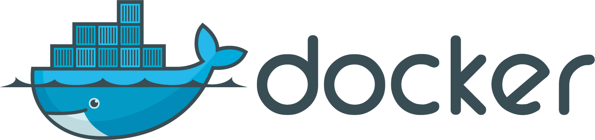
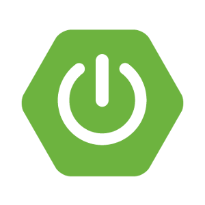
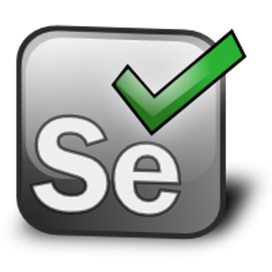
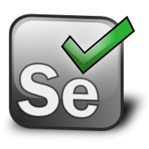
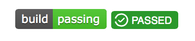
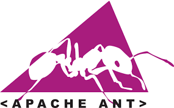

Making a tool for Docker to build and test containers.
By Alex Collins
Who Am I?
"Recreational coder".
The WAR That Would Not Deploy
Jan '14
"Alex - Have you heard of Docker?"
What Is A Maven Plugin?
What Does The Plugin Allow?
pom.xml
com.alexecollins.docker
docker-maven-plugin
clean
validate
package
start
stop
deploy
Dockerfile
FROM dockerfile/java:oracle-java7
EXPOSE 8080
EXPOSE 9200
EXPOSE 9300
ADD ${project.build.finalName}.jar .
CMD java -jar /${project.build.finalName}.jarconf.yml
packaging:
add:
- target/${project.build.finalName}.jar
ports:
- 8080
- 9200
- 9300
healthChecks:
pings:
- url: http://localhost:9200/
- url: http://localhost:8080/
tag:
alexec/searchinabox:${project.version}Demo:
ElasticSearch in a Box

Docker, Maven, Java, Spring Boot, Elastic Search, JUnit, Selenium WebDriver
Demo:
Selenium Grid
 

Docker, Maven, Java, JUnit, Selenium Grid
Tool Architecture
Layer 1:
Docker API Client
Layer 2:
Embeddable Docker Orchestration Library
Layer 3:
Maven Plugin
Tips On Tools
Too Much Disk I/O Means
You Miss Your Dinner
Use Free CI Servers

OSS Community
What's Next?
- Gradle, Ant, and SBT Versions
- Docker Compose Compatibility

End
http://www.alexecollins.com/tags/docker https://github.com/alexec/docker-maven-plugin